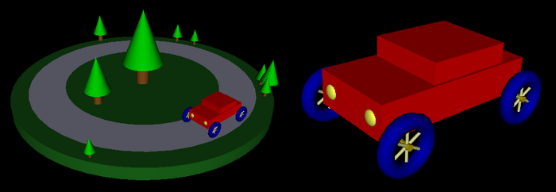
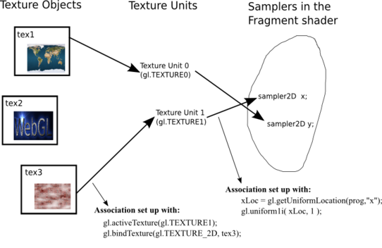

The examples in the previous section demonstrated the basics of using WebGL on a canvas, including creating the vertex and fragment shaders and using uniform, attribute, and varying variables. In this section, we will look at a few more interesting WebGL examples. In the process, we will cover more of the JavaScript side of WebGL programming, including textures, the drawElements function, and a library for working with transformations. We will also cover GLSL programming to some extent, but many details of that language are left to the next section.
WebGL has seven primitives, including three for triangles, three for lines, and one for points. So far in these notes, we've done nothing at all with the points primitive, gl.POINTS. We start this section with an example of using points.
A point is single set of coordinates. However, when a "point" is drawn by OpenGL, it can occupy more than a single pixel. In fact, it occupies a square area that is centered on the position specified by the point's coordinates. The length of a side of that square is called the point size. It is a floating point value, which is measured in pixels. The fragment shader can display anything that it wants in that square. A program — the fragment shader in particular — can display anything it wants in that square.
In WebGL, the point size is specified by the vertex shader, which does so by assigning a float value to the special predefined variable gl_PointSize. The fragment shader is then called for each pixel inside a square of the specified size. The fragment shader can determine which pixel in the square it is drawing by checking the value of gl_PointCoord, a predefined variable of type vec2. The values of the components gl_PointCoord.x and gl_PointCoord.y will be between 0.0 and 1.0 and they specify the location of the pixel within the square that represents the point. As usual in OpenGL, the x coordinate increases from left to right, and the y coordinate increases from bottom to top. This should remind you of the coordinate system on a texture image. In fact, it's common to draw a point as a copy of a texture image, and in that case, gl_PointCoord can be used directly as the texture coordinate for the texture. (Note that the special variables gl_PointSize and gl_PointCoord are only used when the primitive that is being drawn is gl.POINTS.)
My sample program will show each point as a uniformly colored filled circle, where the diameter of the circle is equal to the point size and the color is given as a varying variable. A pixel should be drawn only if it is inside the circle. In the coordinate system of the point, the circle has radius 0.5 and is centered at (0.5,0.5). We can test whether the pixel is outside the circle by testing whether the distance from gl_PointCoord to the center is greater than 0.5. GLSL has a built-in function for computing the distance between two vectors, so we can compute the distance as
float dist = distance( vec2(0.5,0.5), gl_PointCoord );
If dist is greater than 0.5, the pixel should not be drawn. The pixel
should be "discarded." A fragment shader that determines that its pixel should be
discarded can use the discard command. This command, like return,
terminates the fragment shader, and it aborts any further processing of the fragment.
Putting this together, here is a fragment shader for drawing point primitives as
colored circles:
precision mediump float;
varying vec4 vColor;
void main() {
float dist = distance( vec2(0.5,0.5), gl_PointCoord )
if ( dist > 0.5 )
discard;
gl_FragColor = vColor;
}
The corresponding vertex shader must provide values for gl_PointSize and for the varying variable vColor. The values could be constants or they could be specified as uniform variables or as attributes. In my sample program, both the color and the point size are attributes. This means that when gl.POINTS is used to draw multiple points with one call to gl.drawArrays(), the different points can have different sizes and different colors. Here is the vertex shader. Note that the varying vColor is used to pass information from the color attribute to the fragment shader:
attribute vec2 coords;
attribute vec4 color;
attribute float pointSize;
varying vec4 vColor;
void main() {
vColor = color;
gl_Position = vec4( coords, 0.0, 1.0 );
gl_PointSize = pointSize;
}
OK, that's the GLSL side of the program, which is pretty simple in this case. The decisions about how many points to draw and how to color, size, and position them are made on the JavaScript side. My program shows an animation in which colored circles move with constant velocity, reversing direction when they hit the sides of the canvas. The program can be found in points.html. Or click the following button to see the program run for ten seconds as a translucent overlay on this very web page:
The program uses several typed arrays to hold the data for the moving points:
var coords = new Float32Array(2*pointCt); // 2D coordinates of point primitives var velocities = new Float32Array(2*pointCt); // point velocities, one for each coord var colors = new Float32Array(4*pointCt); // a color, including alpha, for each point var pointSizes = new Uint8Array(pointCt); // a size (0 to 255) for each point
where pointCt is a constant giving the number of points that will be drawn. Note that the point sizes are stored in an array of size Uint8Array which limits the possible sizes to the range 0 to 255. The coords, colors, and pointSizes arrays provide values for the attribute variables of the same name in the fragment shader. The velocities array is used only in JavaScript and could just as well have been a regular JavaScript array. All of these arrays are filled with random values during initialization.
In order to send values to the attribute variables in the vertex shader, we need the locations of the attribute variables in the shader program. We also need to create VBO buffers to hold the values, and we will need to use gl.bufferData() to transfer the values from the JavaScript arrays, on the client side, into the VBOs on the server side. Since I don't change the colors and point sizes in this program once they have been chosen, I can transfer the data just once, as part of the initialization:
/* Get the locations for shader program variables */ aCoords = gl.getAttribLocation(prog, "coords"); aColor = gl.getAttribLocation(prog, "color"); aPointSize = gl.getAttribLocation(prog, "pointSize"); /* Create buffers to hold data for the attribute variables. */ aColorBuffer = gl.createBuffer(); aCoordsBuffer = gl.createBuffer(); aPointSizeBuffer = gl.createBuffer(); /* Load color and point sizes into the buffers; this data doesn't change after initialization. */ gl.enableVertexAttribArray(aColor); gl.bindBuffer(gl.ARRAY_BUFFER, aColorBuffer); gl.bufferData(gl.ARRAY_BUFFER, colors, gl.STATIC_DRAW); gl.vertexAttribPointer(aColor, 4, gl.FLOAT, false, 0, 0); gl.enableVertexAttribArray(aPointSize); gl.bindBuffer(gl.ARRAY_BUFFER, aPointSizeBuffer); gl.bufferData(gl.ARRAY_BUFFER, pointSizes, gl.STATIC_DRAW); gl.vertexAttribPointer(aPointSize, 1, gl.UNSIGNED_BYTE, false, 0, 0);
Note that gl.bufferData() uses gl.STATIC_DRAW() because the same data will be used for the entire program. Also note that the data type for point size is specified in the last line as gl.UNSIGNED_BYTE corresponding to the type of array, Uint8Array, that holds the data.
The values for coords, on the other hand, are different for each frame in the animation. For each frame, the values in coords are updated. Then they are transferred to the VBO buffer with gl.BufferData(), using gl.STREAM_DRAW. Finally, the entire picture is drawn as a primitive of type gl.POINTS in a single call to gl.drawArrays():
gl.enableVertexAttribArray(aCoords); gl.bindBuffer(gl.ARRAY_BUFFER, aCoordsBuffer); gl.bufferData(gl.ARRAY_BUFFER, coords, gl.STREAM_DRAW); gl.vertexAttribPointer(aCoords, 2, gl.FLOAT, false, 0, 0); gl.drawArrays(gl.POINTS, 0, pointCt);
There are a couple more new features in the sample program. For one thing, it uses alpha components in colors to make the colors translucent. By default, OpenGL ignores alpha components. To tell OpenGL to use them, you have to enable gl.BLEND. Furthermore, unless you say how they should be used, they will still have no effect; that's done with the function gl.blendFunc() or gl.blendFuncSeparate(). The latter allows the alpha component itself to be treated differently from the RGB components of the color. Here are the two function calls that enable typical translucent colors:
gl.enable(gl.BLEND);
gl.blendFuncSeparate( gl.SRC_ALPHA, gl.ONE_MINUS_SRC_ALPHA,
gl.ZERO, gl.ONE );
Another new thing in this program is that the canvas entirely fills the browser window. Since the size is not known until the program is loaded into a browser, the width and height of the canvas have to be set programmatically to window.innerWidth and window.innerHeight, which give the size of the display area in the browser window. However, doing so does not automatically change the size of the "viewport" in which WebGL draws; that has to be done by calling gl.viewport(). Finally, whenever the window is resized by the user, we want to change the size of the canvas to match; that can be done by defining an event handler for the window.onresize event. Here is the code that does all this:
canvas.width = window.innerWidth;
canvas.height = window.innerHeight;
gl.viewport(0, 0, window.innerWidth, window.innerHeight);
window.onresize = function() { // reset canvas size when window size is changed
canvas.width = window.innerWidth;
canvas.height = window.innerHeight;
gl.viewport(0, 0, window.innerWidth, window.innerHeight);
draw(); // redraw the canvas at its new size
}
The previous example is a 2D application, and it uses no transformations. (The point coordinates are specified in the default OpenGL coordinate system in which x and y both range from −1 to 1.) For most applications, transformations are essential. The WebGL API does not provide any functions for working with transformations. For 3D, the JavaScript side will usually have to create both a modelview and a projection transformation, and it will have to apply rotation, scaling, and translation to the modelview matrix, all without help from WebGL. Doing so is much easier if you have a JavaScript library to do the work. One commonly used library is glmatrix, a free JavaScript library for vector and matrix math that is available from http://glmatrix.net/. The download includes two versions of the library: gl-matrix.js, which includes documentation and is meant for human readers, and a much smaller gl-matrix-min.js, which contains only the JavaScript code and is meant for inclusion in web pages. We will be using Version 2.0 of the library, which is incompatible with Version 1.
The glmatrix library defines what it calls "classes" named vec2, vec3, and vec4 for working with vectors of 2, 3, and 4 numbers. It defines mat3 for working with 3-by-3 matrices and mat4 for 4-by-4 matrices. (The names should not be confused with the GLSL types of the same names; glmatrix in entirely on the JavaScript side.) Each class defines a set of functions for working with vectors or matrices. In fact, although the documentation uses the term "class," glmatrix is not object-oriented. The functions in its classes are what would be called static methods in Java. Vectors and matrices are represented as ordinary arrays, and the functions in classes like vec4 and mat4 simply operate on those arrays. There are no objects of type vec4 or mat4. The arrays are of type Float32Array or Array, and so can be used directly in WebGL functions such as glUniform4fv() and glUniformMatrix4fv(). It is possible to pass arrays of type Float32Array or Array as parameters to glmatrix functions. For example, if the glmatrix documentation says that a parameter should be of type vec3, it is OK to pass a regular JavaScript array of three numbers as the value of that parameter. When you use glmatrix functions to create objects, it uses Float32Array.
All the glmatrix classes have a create() function which creates an array of the appropriate length and fills it with default values. For example,
transform = mat4.create();
sets transform to be a new Float32Array of length 16, initialized to represent the identity matrix. (Matrices in OpenGL are represented as one-dimensional arrays, rather than two-dimensional, and that is the format that must be used with glUniformMatrix4fv().) Similarly,
vector = vec3.create();
creates a Float32Array of length 3, filled with zeros. Each class also has a function clone(x) that creates a copy of its parameter x. For example,
saveTransform = mat4.clone(transform);
Most other functions do not create new arrays. Instead, they modify the contents of their first parameter. For example, mat4.multiply(A,B,C) will modify A so that it holds the matrix product of B and C. Each parameter must be a mat4 (that is, an array of length 16) that already exists. It is OK for some of the arrays to be the same. For example, mat4.multiply(A,A,B) has the effect of multiplying A times B and modifying A so that it contains the answer.
There are functions for multiplying a matrix by standard transformations such as
scaling and rotation. For example if A and B are mat4s and v is a vec3,
then mat4.translate(A,B,v) makes A equal to the product of B and
the matrix that represents translation by the vector v. In practice, we will
use such operations mostly on a matrix that represents the modelview transformation.
So, suppose that we have a mat4 named modelview that holds the current modelview
transform. To apply a translation by a vector [dx,dy,dz], we can say
mat4.translate( modelview, modelview, [dx,dy,dz] );
This is exactly equivalent to calling glTranslatef(dx,dy,dz) in
OpenGL. That is, if we draw some geometry after this statement, using modelview
as the modelview transformation, then the geometry will first be translated by
[dx,dy,dz] and then will be transformed by whatever the previous value
of modelview was. Note the use of a vector to specify the translation in this
command, rather than three separate parameters; this is typical of glmatrix.
To apply a scaling transformation with scale factors sx, sy, and sz,
use
mat4.scale( modelview, modelview, [sx,sy,sz] );
For rotation, glmatrix has four functions, including three for the common cases of rotation about the x, y, or z axis. The fourth rotation specifies the axis of rotation as the line from (0,0,0) to a point (dx,dy,dz). Unfortunately, the angle of rotation is specified in radians rather than in degrees:
mat4.rotateX( modelview, modelview, radians ); mat4.rotateY( modelview, modelview, radians ); mat4.rotateZ( modelview, modelview, radians ); mat4.rotate( modelview, modelview, radians, [dx,dy,dz] );
These function allow us to do all the basic modeling and viewing transformations that we need for 3D graphics. To do hierarchical graphics, we also need to save and restore the transformation as we traverse the scene graph. For that, we need a stack. We can use a regular JavaScript array, which already has push and pop operations which make it possible to use an array as a stack. So, we can create the stack as an empty array:
var matrixStack = [];
We can then push a copy of the current modelview matirx onto the stack by saying
matrixStack.push( mat4.clone(modelview) );
and we can pop a matrix from the stack with
modelview = matrixStack.pop();
These operations are equivalent to glPushMatrix() and glPopMatrix() in OpenGL.
In OpenGL, the function gluLookAt is often used to set up the viewing transformation as the initial value of the modelview transform. The glmatrix library has a "lookAt" function to do the same thing:
mat4.lookAt( modelview, [eyex,eyey,eyez], [refx,refy,refz], [upx,upy,upz] );
Note that this function uses three vec3s in place of the nine separate parameters in gluLookAt. Note also that this is the equivalent of calling glLoadIdentity() followed by gluLookAt(eyex,eyey,eyez,refx,refy,refz,upx,upy,upz). Thus, you don't have to set modelview equal to the identity matrix before calling mat4.lookAt, as you would usually do in OpenGL. However, you do have to create the modelview matrix, such as by calling
var modelview = mat4.create();
I will note that if you do want to set an existing mat4 to the identity matrix, you can do it with the mat4.identity function. For example,
mat4.identity( modelview );
You would do this if you wanted to compose the view transformation out of basic scale, rotate, and translate transformations.
The glmatrix library also has functions for setting up the projection transformations. It has functions equivalent to glOrtho, glFrustum, and gluPerspective, except that the field-of-view angle in mat4.perspective is given in radians rather than degrees:
mat4.ortho( projection, left, right, bottom, top, near, far ); mat4.frustum( projection, left, right, bottom, top, near, far ); mat4.perspective( projection, fovyInRadians, aspect, near, far );
You do not need to load projection with the identity before calling one of these functions, but you must create the mat4 projection.
Of course, the point of making a projection and a modelview transformation is to use them while drawing primitives. In WebGl, the vertex shader will usually have uniform variables of type mat4 to hold the transformations, and it will apply them to the coordinates of the vertex that it is processing. Here is a simple vertex shader that does this (note that in the shading language, the multiplication operator * can be used to multiply a vector by a matrix):
attribute vec3 coords; // The untransformed (x,y,z) coordinates of the vertex.
uniform mat4 modelview; // The modelview transformation matrix.
uniform mat4 projection; // The projection transformation matrix.
void main() {
vec4 coords = vec4(coords,1.0); // Add 1 as the w coordinate to get a vec4
vec4 transformedVertex = modelview * coords; // Apply the modelview transform
gl_Position = projection * transformedVertex; // Apply the projection transform
}
On the JavaScript side, we will need to know the locations of the uniform variables in the shader program, and we will need JavaScipt variables to represent the transformations. I will risk using the same name for the JavaScript variables and for the shader variables:
var uProjection; // The location of the uniform variable projection in the shader program var uModelview; // The location of the uniform variable modelview in the shader program var projection = mat4.create(); // The projection matrix (on the JavaScript side). var modelview = mat4.create(); // The modelview matrix (on the JavaScript side).
Values for uProjection and uModelview can be obtained using gl.getUniformLocation(); for example:
uProjection = gl.getUniformLocation(prog,"projection"); uModelview = gl.getUniformLocation(prog,"modelview");
Before drawing the geometry, we would set up the projection and modelview transformations and copy them to the shader uniform variables. For example, we might do something like this:
mat4.perspective(projection, Math.PI/4, 1, 4, 8); // create project gl.uniformMatrix4fv( uProjection, false, projection ); // copy to shader mat4.lookAt(modelview, [0,0,6], [0,0,0], [0,1,0]); // create view transform mat4.rotateX(modelview, modelview, rotateX); // add modeling transforms mat4.rotateY(modelview, modelview, rotateY); gl.uniformMatrix4fv( uModelview, false, modelview ); // copy to shader
This code is taken from the sample WebGL program cube-unlit.html, which shows a multicolored cube, with no lighting calculations. The variables rotateX and rotateY in that program are controlled by the arrow keys, allowing the user to rotate the cube.
To add lighting, we have to worry about normal vectors. And if some geometry is transformed, then the normal vectors for that geometry must also be transformed. However, it turns out the the normal vectors are not transformed by the same matrix that is applied to the vertices of the geometry. Instead, they are transformed by a certain 3-by-3 matrix which can be computed from the modelview matrix that is applied to the vertices. The glmatrix library has a function for computing the normal transformation matrix. It is part of the class mat3, not mat4:
mat3.normalFromMat4( normalMatrix, modelview );
Here, normalMatrix is an existing mat3 that will be set to the normal transformation matrix corresponding to the mat4 modelview. (For people who know linear algebra, normalMatrix is the inverse of the transpose of the 3-by-3 matrix taken from the first three rows and first three columns of modelview, but there is no reason for you to know why that works.) For lighting calculations, normalMatrix is sent to a uniform mat3 in the shader program, where it is used to transform the normal vector. The transformed vector is then normalized to ensure that it is a unit vector, and the result is used in the lighting equation. (The transformation can change the length of the normal if there is any scaling involved in the transform, but not if it made up of just rotations and translations.)
The sample program cube-lit.html shows a cube that is lit by a simple viewpoint light which shines from the direction of the positive z-axis in eye coordinates. The colors of the cube are taken to be diffuse colors, with no specular component. In this case, the lighting calculation reduces to multiplying the RGB components of the color by the z-coordinate of the transformed normal vector. (The z-coordinate is actually the inner product of the transformed normal vector with the vector [0,0,1]. This inner product is the cosine of the angle between the normal and [0,0,1], which is the direction of the light.) In the sample program, the lighting calculation is done in the vertex shader. Here is the shader source code:
attribute vec3 coords;
uniform mat4 modelview;
uniform mat4 projection;
uniform bool lit; // Tells whether or not to apply the lighting calculation.
uniform vec3 normal; // Normal (often would be an attribute not a uniform)
uniform mat3 normalMatrix; // Transformation matrix for the normal vector.
uniform vec4 color;
varying vec4 vColor;
void main() {
vec4 coords = vec4(coords,1.0);
vec4 transformedVertex = modelview * coords;
gl_Position = projection * transformedVertex;
if (lit) { // apply the lighting equation
vec3 unitNormal = normalize( normalMatrix*normal );
float multiplier = abs(unitNormal.z);
vColor = vec4( multiplier*color.r, multiplier*color.g,
multiplier*color.b, color.a );
}
else { // if not lit, just use the unmodified color
vColor = color;
}
}
The two examples that have been mentioned in this section both use the keyboard to rotate the cube. A third example, cube-with-rotator.html, uses the mouse for rotation. It implements a simple trackball-like interface for rotating the view about the origin by dragging the mouse on the WebGL canvas. An object of type SimpleRotator is used for the purpose. This is a class that I wrote, and it is defined in the JavaScript file simple-rotator.js. You can read the source code file for full documentation. In the sample program, the rotator is created during initialization with the code:
rotator = new SimpleRotator(canvas,draw); rotator.setView( [2,2,5], [0,1,0] );
The first parameter in the constructor is the canvas element, and the second is the name of the function that draws on the canvas. That function will be called each time the rotation changes as the user drags the mouse on the canvas. An object of type SimpleRotator can create a viewing transformation matrix for a view looking from some point towards the origin. In the function rotator.setView(), the first parameter is the viewpoint. The second is the viewup vector for the view. (An optional third parameter is a positive number that specifies the distance of the viewer from the origin; if it is specified, the first parameter gives the direction of view rather than the viewpoint.) Note that the view changes as the user drags the mouse.
The only other place where the rotator is used is in the draw() method, where it is used to create the viewing transformation. The code is:
var modelview = rotator.getViewMatrix();
This code is used in place of mat4.lookAt() to create the viewing transform. The modelview matrix could then be modified by modeling transformations, using the transformation functions from the glmatrix library.
In Section 16, we encountered IFSs (Indexed Face Sets). An IFS is an efficient way of representing the data for a surface consisting of polygons, where the polygons can share vertices. We will use IFSs in which all the polygons are triangles. In the IFS representation, coordinates and other attributes of the vertices are stored in lists, with the vertices stored in any convenient order. Each vertex of a triangle is specified by a single integer that gives the number of one of the vertices in the arrays of attribute data. It should not be surprising that OpenGL and WebGL have built-in support for rendering IFSs. Previously we have used gl.drawArrays() to render a primitive. When drawing an IFS, the function gl.drawElements() is used instead. In fact, gl.drawElements() can be used to draw any primitive; however, we will use it only for primitives of type gl.TRIANGLES.
When using gl.drawElements(), the vertex coordinates and the value for any vertex attributes are stored in VBO buffers, just as they would be for gl.drawArrays(). The vertex coordinates are represented by a list of numbers where, typically, each group of three numbers gives the coordinates for one vertex. Texture coordinates are another possible attribute, and they would be stored as a list of numbers in another VBO; however, in this case, only two numbers are given for each vertex. It is important to understand that when we talk about indices into these lists, we are indexing the vertices, not the individual numbers in the list. For example, the coordinates for vertex number 3 would items number 9, 10, and 11 in the list of vertex coordinates; on the other hand, the texture coordinates for vertex number 3 would be items number 6 and 7 in the list of texture coordinates. An IFS might typically include lists of numbers for the vertex coordinates, texture coordinates, and normal vectors. Material properties are also possible attributes. Note that these lists are "parallel" in the sense that the data for vertex 0 is at position 0 in each of the arrays, the data for vertex 1 is at position 1 in each array, the data for vertex 2 is at position 2 in each of the arrays, and so on.
But in addition to data for the vertex attributes, we also need a list of indices. If we are drawing a gl.TRIANGLES primitive, we need a list of integers that contains three integers for each triangle. Let's suppose that the indices are stored in a typed array named indices of type Uint16Array. For use with gl.drawElements(), the indices must be copied into a VBO. That VBO would be created as usual; for example,
indexBuffer = gl.createBuffer();
To copy the data from the array into the buffer, the buffer must first be bound as the current ELEMENT_ARRAY_BUFFER. Then gl.bufferData() can be used to load the data into the buffer. This can be done as follows:
gl.bindBuffer(gl.ELEMENT_ARRAY_BUFFER, indexBuffer); gl.bufferData(gl.ELEMENT_ARRAY_BUFFER, indices, gl.STATIC_DRAW);
where the last parameter to gl.bufferData() could also be gl.STREAM_DRAW or gl.DYNAMIC_DRAW. You would also need to set up all the data for the vertex attributes in their own ARRAY_BUFFERs. The index buffer must also be bound when gl.drawElements() is called. Typically, this would look like:
gl.bindBuffer(gl.ELEMENT_ARRAY_BUFFER,indexBuffer); gl.drawElements(gl.TRIANGLES, indices.length, gl.UNSIGNED_SHORT, 0);
Here, the first parameter of gl.drawElements() is the type of primitive that will be drawn. The second is the number of indices (which will be three times more than the number of triangles when the primitive is gl.TRIANGLES). The third parameter is the data type for each index. I use gl.UNSIGNED_SHORT here because the indices were specified as 16-bit integers in a Uint16Array. The type must be gl.UNSIGNED_SHORT or gl.UNSIGNED_BYTE. Finally, the last parameter of gl.drawElements() is the position of the starting point of the data in the buffer. It will generally be zero, but if non-zero is should be the number of bytes that precede the start of the data.
As a simple example, let's see how to draw a square as an IFS, including normal vectors and texture coordinates. (This is not a great example, since all the normal vectors are the same.) Assume that there are attribute variables named coords, normal, and texCoords in the vertex shader program. We might then set everything up as follows. This could be done once, as part of initialization:
var aCoords, aNormal, aTexCoords; // locations of attribute variables in the shader var aCoordBuffer, aNormalBuffer, aTexCoordsBuffer; // buffers for the attributes var indexBuffer; // buffer for the indices var coordData = new Float32Array([ -1,-1,0, 1,-1,0, 1,1,0, -1,1,0 ]); var normalData = new Float32Array([ 0,0,1, 0,0,1, 0,0,1, 0,0,1 ]); var texCoordsData = new Float32Array([ 0,0, 1,0, 1,1, 0,1 ]); var indices = new Uint8Array([ 0,1,2, 1,3,0 ]); aCoords = gl.getAttribLocation(prog, "coords"); // assume prog is the shader program aNormal = gl.getAttribLocation(prog, "normal"); aTexCoords = gl.getAttribLocation(prog, "texCoords"); aCoordBuffer = gl.createBuffer(); aNormalBuffer = gl.createBuffer(); aTexCoordsBuffer = gl.createBuffer(); indexBuffer = gl.createBuffer();. gl.bindBuffer(gl.ARRAY_BUFFER, aCoordsBuffer); gl.bufferData(gl.ARRAY_BUFFER, coordData, gl.STATIC_DRAW); gl.vertexAttribPointer(aCoords, 3, gl.FLOAT, false, 0, 0); gl.enableVertexAttribArray(aCoords); gl.bindBuffer(gl.ARRAY_BUFFER, aNormalBuffer); gl.bufferData(gl.ARRAY_BUFFER, normalData, gl.STATIC_DRAW); gl.vertexAttribPointer(aNormal, 3, gl.FLOAT, false, 0, 0); gl.enableVertexAttribArray(aNormal); gl.bindBuffer(gl.ARRAY_BUFFER, aTexCoordsBuffer); gl.bufferData(gl.ARRAY_BUFFER, texCoordsData, gl.STATIC_DRAW); gl.vertexAttribPointer(aNormal, 2, gl.FLOAT, false, 0, 0); gl.enableVertexAttribArray(aTexCoords); gl.bindBuffer(gl.ELEMENT_ARRAY_BUFFER,indexBuffer); gl.bufferData(gl.ELEMENT_ARRAY_BUFFER, indices, gl.STATIC_DRAW);
Note that for an element array buffer, there is nothing corresponding to gl.vertexAttribPointer or gl.enableVertexAttribArray. Then, the square can be drawn using the two lines given above:
gl.bindBuffer(gl.ELEMENT_ARRAY_BUFFER,indexBuffer); gl.drawElements(gl.TRIANGLES, indices.length, gl.UNSIGNED_SHORT, 0);
(The first line here is only really necessary if it is possible that some other buffer has been bound as the current element array buffer in the meantime.)
The sample program webgl/IFS-demo.html can display a variety of objects that are represented as IFSs. It uses the same shader program and the same basic lighting and rotator framework as cube-with-rotator.html, but it has a pop-up menu for selecting any one of seven different models. The models themselves are defined using the JavaScript file basic-objects-IFS.js. An IFS model in this file is represented as a JavaScript object with four properties. For a model model, the properties are:
Thus, for example, when the index data is loaded into a buffer, it is done with the commands
gl.bindBuffer(gl.ELEMENT_ARRAY_BUFFER,indexBuffer); gl.bufferData(gl.ELEMENT_ARRAY_BUFFER, modelData.indices, gl.STATIC_DRAW);
You can examine the source code to see exactly how the models are created and used.
The sample program DiskWorld1.html is an example of a simple hierarchical graphics scene implemented in WebGL. It uses the same IFS models as the previous example as the basic objects in the scene. In this case, I create a separate set of VBO buffers for each basic object. This allows me to load the data for an object into its dedicated buffers when the program is being initialized. When drawing the object, it is necessary to bind the buffers that hold the object's coordinates, normal vectors, and indices before calling gl.drawElements(). The program also illustrates the use of a stack of matrices to implement hierarchical graphics with the glmatrix library. Here's the scene drawn by the program, along with a closeup of the car:

Mapping a texture image to a surface is a fairly complex operation, and graphics cards typically have specialized hardware called texture units or texture mapping units (TMUs) to do the work. In modern graphics cards, several texture units can be used simultaneously by shader programs, and each of those texture units can process a different texture image. This makes it possible for a shader to use several textures on the same primitive. This can make sense, for example, if the textures can be translucent or if one of them is being used as a bump map.
Texture units should not be confused with texture objects. A texture object represents memory on the graphics card that holds a single texture image and its associated configuration parameters. A texture unit uses data from a texture object; based on that data and on the texture coordinates of a point on a surface, the texture unit can compute the appropriate texture color for that point. This computation will include things like minification or magnification filtering and the texture's wrap mode. Looking up a color value for given texture coordinates is called sampling the texture.
Working with textures is complicated by the necessity of dealing with both texture units and texture objects. However, you don't really have to do anything with texture units unless you write a shader program that uses multiple textures: To make several textures available to a shader, you have to use one texture unit for each shader.
A shader program's interface to a texture unit is a special kind of uniform variable known as a sampler. The shader language defines two sampler types: sampler2D and samplerCube. A variable of type sampler2D is for use with a regular image texture, while a samplerCube is for use with a cubemap texture. A sampler must be declared as a uniform variable, and its value will be provided by JavaScript on the client side. The purpose of a sampler is to get information from a texture unit (the operation called "sampling"); the value of a sampler is just a code that tells it which texture unit to use.
The shader language has a predefined function texture2D() that can be used to get a sample from a texture image. It has two parameters: a sampler2D that says which texture unit to use, and a vec2 that holds the texture coordinates for which the sample is being requested. So, a typical use of a sampler2D might look like
texColor = texture2D( sampler, texCoords );
where the variables are declared as
uniform sampler2D sampler; // specifies the texture unit to use varying vec2 texCoords; // the texture coordinates vec4 texColor; // the color sample from the texture
In practice, texture coordinates are usually provided to the vertex shader as attributes of vertices. They are passed on to the fragment shader in a varying variable, and the actual texture lookup is done in the fragment shader. This explains why I declared texCoords as a varying variable in the above example.
For cubemap textures, there is a similar function textureCube() that works with variables of type samplerCube. However, I will not be considering cubemap textures further in these notes.
Once you've gotten a color from a texture, there's the question of what to do with it. One option is simply to use it as the fragment color, but it is more likely that you will want to use it as one of the inputs to the color calculation. The default option in OpenGL 1.0 would correspond to computing a basic color for the fragment, based on lighting and material properties, and then multiply that basic color by the texture color. Something like:
gl_FragColor = vec4( basicColor.r*texColor.r, basicColor.g*texColor.g,
basicColor.b*texColor.b, basicColor.a );
Another possibility is to use the texture color as the diffuse material in the lighting equation. Or you might use the texture in the vertex shader like a displacement map in Blender to modify the vertex coordinates or a bump map to modify the normal coordinates. The point, of course, is that a shader is a program so that in effect you can do anything you want with a texture. You aren't limited to the very few possibilities that were built into the fixed function pipeline.
As you can see, samplers are easy to use in shader programs. There's really not much that you can do with a sampler variable, just use it to get a color from a texture. However, there is work to do on the client side to set up the texture.
Some of the JavaScript functions for working with textures will be familiar to you from OpenGL 1.0. In particular, there is a function gl.texImage2D() for loading an image into a texture object. And gl.texParameteri() is used to configure properties such as wrap modes for textures. However, functions for working with texture objects and texture units will be new to you.
Texture units are identified by constants gl.TEXTURE0, gl.TEXTTURE1, ..., up to some maximum. Texture unit 0 is the default texture unit, which is used if you don't explicitly select a different texture unit. The currently selected texture unit is called the active texture unit. The active texture unit is selected by calling
gl.activeTexture( tex );
where the parameter tex is one of the constants gl.TEXTURE0, gl.TEXTTURE1, and so on. When you select the active texture unit, you are simply specifying the texture unit to which all other texture operations will apply. Remember that if you are only going to use one texture at a time, you only need one texture unit; in that case, the default texture unit is fine and there no need to call gl.activeTexture().
The value of a sampler variable in WebGL is simply the integer code number for one of the texture units: 0 for gl.TEXTURE0, 1 for gl.TEXTURE1, and so on. A texture unit is the source for image data to be used in a shader program, and a sampler variable is simply the interface between the shader program and the texture unit. The value of the sampler variable says which texture unit to use. You can set the value of a sampler variable using gl.uniform1i(). For example if uSampler is the ID for a sampler variable, obtained with gl.getUniformLocation(), then you can set that sampler to use texture unit number 2 by calling
gl.uniform1i( uSampler, 2 );
To use the default texture unit, number l0, say
gl.uniform1i( uSampler, 0 );
In the browsers that I tested, it seems like 0 is the default initial value for a sampler variable, so that it is not even necessary to use gl.uniform1i() to set its value to zero. However, I don't know whether that is true in all browsers.
Turning from texture units to texture objects, remember that a texture object is memory on the server side that can hold one texture image and its configuration parameters. A texture object must be created before it can be used. (In WebGL, you must create a texture object if you want to use a texture; in OpenGL 1.0, one is created automatically to be used as a default, but that is not true in WebGL.) To create a texture object, call the function gl.createTexture(), which returns an identifier for the new texture object:
texID = gl.createTexture();
This creates the object but does not load any data into it. Before you can do anything with the texture object, you have to bind it by calling
gl.bindTexture(gl.TEXTURE_2D, texID);
Binding a texture selects the texture object to which subsequent operations will apply. A texture object must be bound before you can load image data into it and before you can set its configuration parameters. Furthermore, the texture object must be bound at the time a primitive is rendered in order to be used on that primitive. Note that each texture unit can have its own bound texture object. When you call gl.bindTexture(), it binds a texture object in the currently active texture unit. When a primitive is rendered, each texture unit can have a bound texture object from which it can supply image data to be used on the primitive. (Again, this is rather complicated when you are using more than one texture unit: A texture unit must be active in order to bind a texture object in that texture unit, and the texture object must be bound to the texture unit in order to be used on a primitive. However, the texture unit does not have to be active when rendering the primitive—once you have bound the texture object to the texture unit, the texture unit no longer has to be active.)
This diagram shows the relationships among texture objects, texture units, and sampler variables. Each texture unit has a bound texture object from which it takes image data and passes it on to a sampler variable:

So, we come at last to loading image data and configuring a texture object. In WebGL, gl.texImage2D() can take its image data from an object of type Image. Such images are generally loaded asynchronously, and the image data is not available until the image has loaded. Typically, then, the work of loading image data into a texture and configuring the texture is often done in an event-handler function for the image load event. Here is a function that I use in a sample program to load and configure a texture. Once the texture is loaded, the value of the global variable textureID is set to the identifier for the texture object that has been created:
function loadTexture() {
var img = new Image();
img.onload = function() {
var id = gl.createTexture();
gl.bindTexture(gl.TEXTURE_2D,id);
gl.texImage2D(gl.TEXTURE_2D, 0, gl.RGBA, gl.RGBA, gl.UNSIGNED_BYTE, img);
gl.generateMipmap(gl.TEXTURE_2D);
gl.texParameteri(gl.TEXTURE_2D, gl.TEXTURE_WRAP_S, gl.REPEAT);
gl.texParameteri(gl.TEXTURE_2D, gl.TEXTURE_WRAP_T, gl.REPEAT);
textureID = id; // textureID is a global variable
draw(); // redraw the scene with the texture
}
img.src = "textures/brick001.jpg"; // URL of the image file
}
The fact that textureID has been defined is a signal to the render routine that the texture image has been loaded. Until that happens, the scene is drawn without the texture.
In this example, the function gl.generateMipmap(gl.TEXTURE_2D) will generate a full set of mipmaps for the texture. This function, which does not exist in OpenGL 1.0, is a great convenience. This code also uses gl.texParameteri() to set the wrap modes for the texture.
The sample programs cube-with-texture.html and IFS-with-texture.html are examples of using textures with WebGL. The first program is a simple example that shows a textured cube. The second can show a variety of objects with a variety of textures. However, neither program uses any texture unit other than the default one.